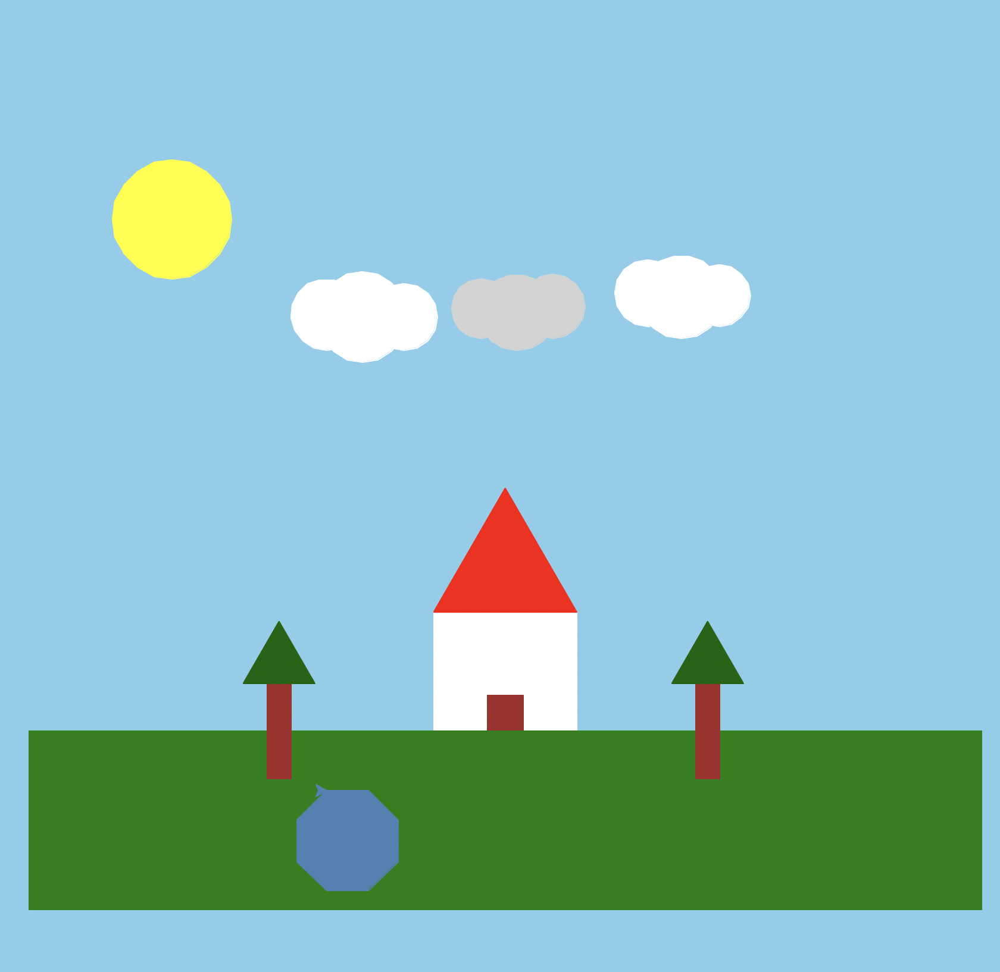

For this project, I used Python's Turtle graphics library to draw a daytime scene from scratch. The scene includes a house with a red roof and brown door, two trees, a sun, three clouds (including a gray one), a green grass field, and a steel blue pond — all built using custom functions for shapes like rectangles, triangles, circles, and polygons.

draw_house, draw_tree, draw_cloud)penup() / pendown()